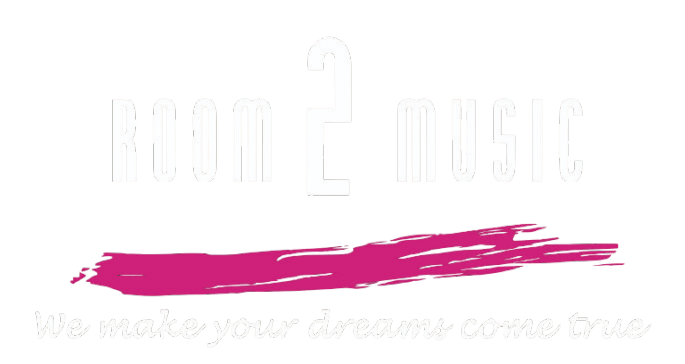

電/木吉他Bass爵士鼓兒童友善檢定/比賽
關於 Room2Music
🎵貳館音樂：實現你的音樂夢想🎶
Room2Music致力於點燃每一位學員對音樂的熱情，猶如心臟般強而有力地鼓動著。
這裡提供多元化的音樂教學，從樂器入門到進階演奏，都能讓你找到屬於自己的節奏。不論你是想學習吉他、貝斯、爵士鼓，或是挑戰其他樂器，貳館音樂都將陪伴你探索音樂的無限可能。
📍我們的教學據點：
- 嘉義市東區學府路
- 台南市東寧路西段22號B1
- 高雄市新興區中正三路127號
方便你隨時加入我們的音樂大家庭。
✨ 更多詳細內容，追蹤我們下列聯絡方式！隨時掌握最新課程資訊與活動動態！
送出成功